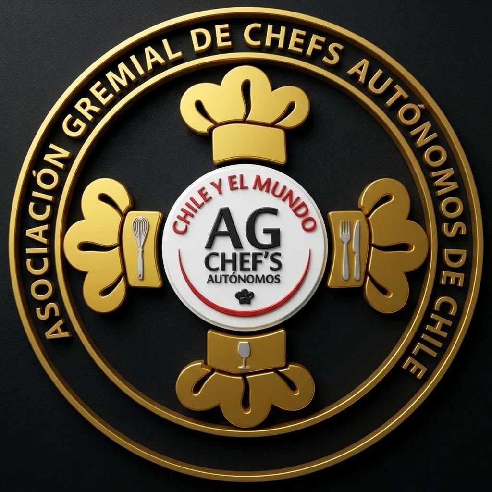

Asociación Gremial de Chefs Autónomos de Chile y Asociados Internacionales.
Uniendo culturas, saberes y generaciones a través de la gastronomía.
ConócenosUna organización que trabaja por el fortalecimiento de la gastronomía, la identidad cultural y el desarrollo de las comunidades.
La Asociación Gremial de Chefs Autónomos de Chile y Asociados Internacionales (AGCA Chile) es una organización legalmente constituida y sin fines de lucro, conformada por profesionales del ámbito gastronómico, cultural, educativo y social.
Promovemos el encuentro entre la cocina ancestral y las expresiones gastronómicas del mundo, impulsando la formación, la inclusión y el reconocimiento del patrimonio culinario.
RUT: 76.690.893-4
La gastronomía como herramienta de identidad, educación, integración y transformación social.
Rescatamos y difundimos los saberes, productos y tradiciones culinarias de nuestros pueblos.
Promovemos instancias de aprendizaje para jóvenes, estudiantes y profesionales.
Impulsamos espacios gastronómicos accesibles y oportunidades para todas las personas.
Apoyamos iniciativas comunitarias y acciones solidarias a través de la gastronomía.
Congreso Gastronómico Inclusivo, Internacional y Ancestral de Chile.
Un encuentro que reúne culturas, cocineros, conocimientos y tradiciones, generando vínculos entre países a través de la gastronomía.
Chile · México · Perú · América Latina
Sus distintas ediciones han permitido compartir experiencias, fortalecer alianzas y dar visibilidad a la riqueza gastronómica de nuestros territorios.
Construyendo puentes gastronómicos y culturales más allá de nuestras fronteras.
Encuentros internacionales y reconocimiento de la identidad gastronómica ancestral.
Intercambio cultural y gastronómico en el marco de Fuegos del Continente.
Promoción del patrimonio culinario, la formación y la inclusión.
Invitamos a profesionales, cocineros, emprendedores, instituciones y personas comprometidas con la gastronomía a conocer y participar de nuestras iniciativas.
EscríbenosAsociación Gremial de Chefs Autónomos de Chile y Asociados Internacionales.
Correo: agca.chile17@gmail.com
Chile · Proyección internacional